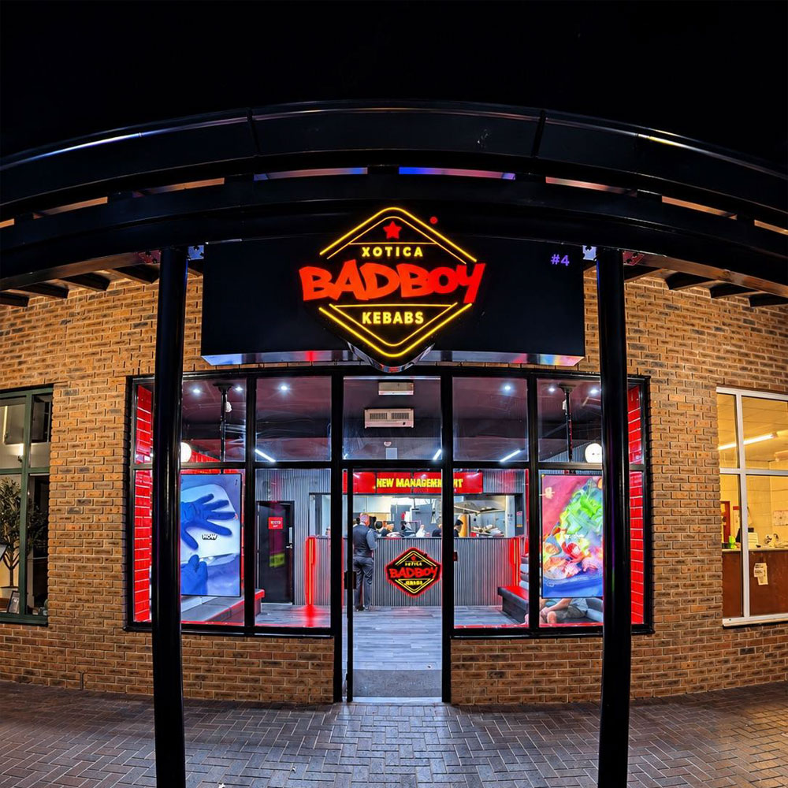
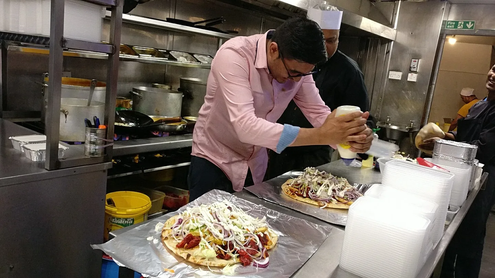
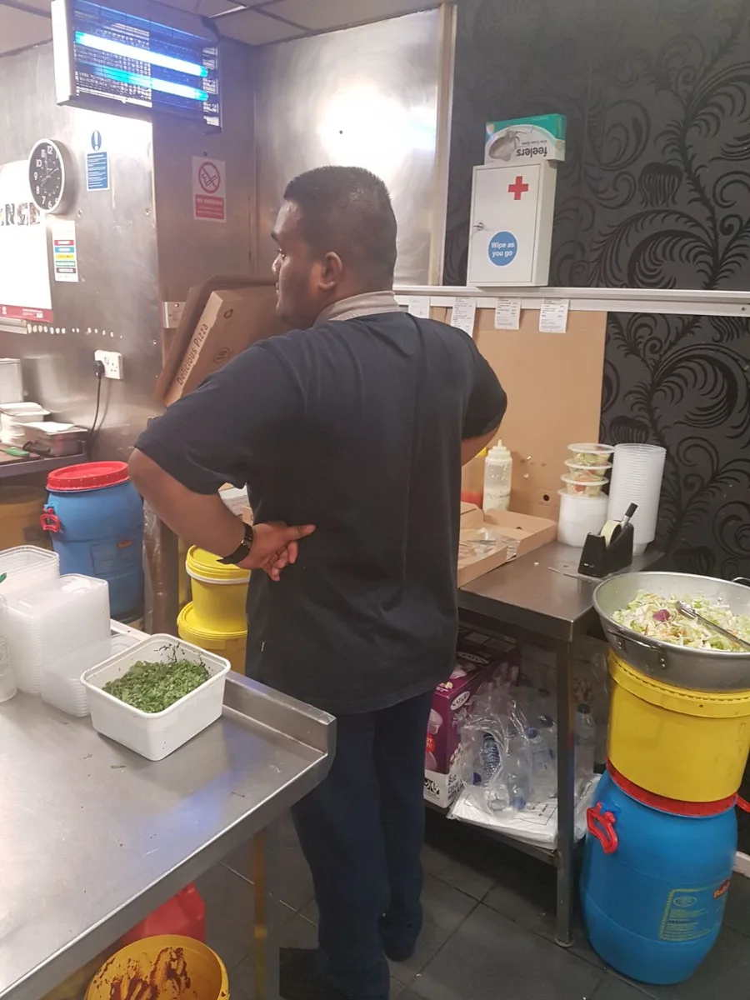
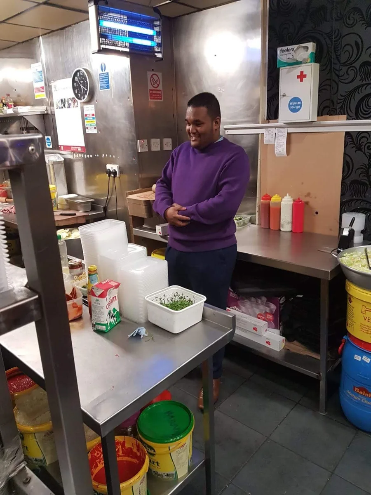
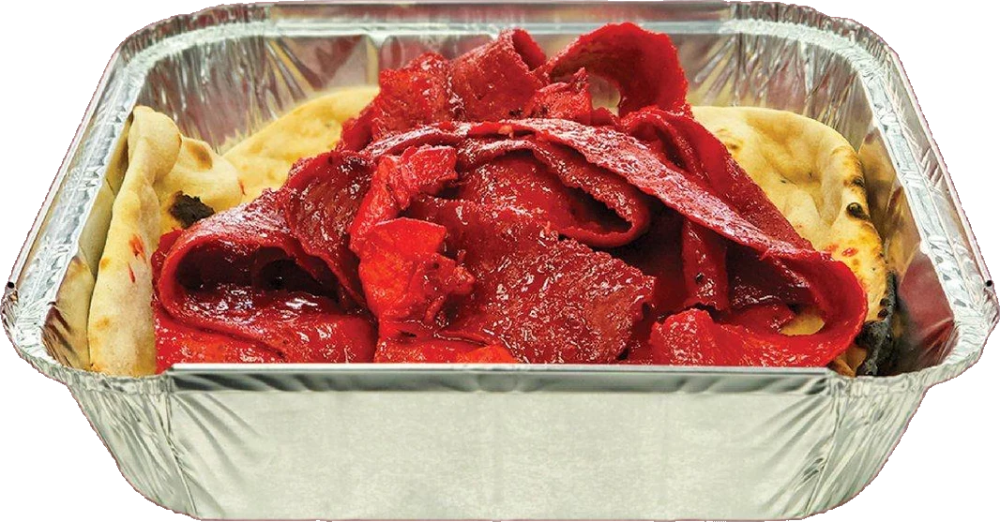
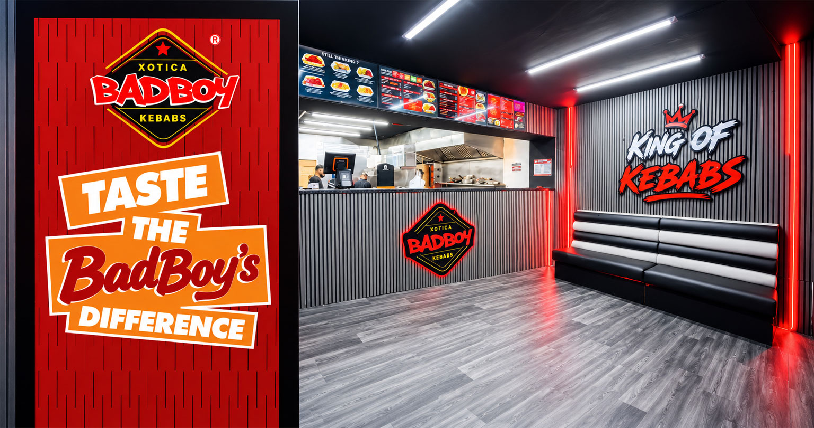

The Story of
Xotica BadBoy
Kebabs.
– Quality is our Trademark.

It all started in 2015
It all started in 2015 in Walkden, with four brothers and one simple idea: Take doner meat to another level.
We wanted to make doner more vibrant, rich and exciting. Instead of serving the same doner everyone was used to, we started experimenting with flavours, creating something different and giving customers a choice of doner that matched their own taste buds.
What started as a simple idea slowly became something much bigger.
As the years went by, our menu grew. New flavours, new sides, new extras and new ideas were introduced always listening to what our customers wanted and finding new ways to make their experience better.
It’s all about the people
But the most important part of our journey has always been the people.
A customer would walk through our doors for the first time, try our food, and come back again. Then again. And before long, that one customer became a regular.
Many of those regulars have been with us for years, and some have watched Xotica BadBoy Kebabs grow from the very beginning. Today, our passion remains exactly the same.
Taste the difference
We focus on quality in everything we do from our flavoured doner meat, to our quality lean-cut doner kebab, right through to our sides and extras.
We believe you should be able to taste the difference.
From one shop in Walkden to where we are today, the journey has been built one customer at a time, one meal at a time, and one idea at a time.
And we’re still growing.
So whether you’ve been with us since 2015 or you’re trying Xotica BadBoy Kebabs for the very first time, welcome to the journey.
Join us as we grow.
Xotica BadBoy Kebabs — Quality is our Trademark.
Where it all began



First ever creation of the Mix Meat BadBoy cooked in the original BadBoy Sauce – 2015
Let’s talk quality!
We meticulously select only the highest quality meats to craft our renowned Doner, ensuring each savoury bite embodies perfection.
Our dedication to superior taste extends beyond the meat, as we elevate the kebab experience with our five signature sauces, from the beloved BadBoy Sauce to the fiery Flamin’ BadBoy Sauce, igniting taste buds and transcending flavour expectations.
Embracing tradition, we enhance our doner with the freshest locally sourced produce, while our artisanal approach to crafting Naan Bread in a traditional clay oven adds a nostalgic touch.

